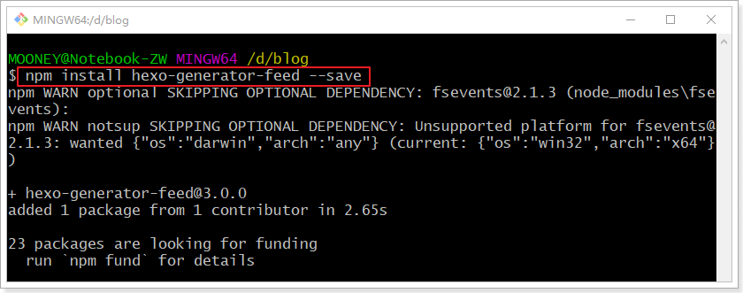

Hexo博客添加RSS订阅
虽然RSS订阅基本没什么人用，但作为一个基本功能，该加上的还是得加上。
安装Feed插件
在 blog/ 根目录打开终端窗口，运行如下命令
1 | $ npm install hexo-generator-feed --save |
安装成功效果如图所示

配置Feed
打开_config.yml配置文件，在里面新增如下配置：
1 | feed: |
具体可以参照 hexo-generator-feed 官方配置文档
附：
参考视频

虽然RSS订阅基本没什么人用，但作为一个基本功能，该加上的还是得加上。
在 blog/ 根目录打开终端窗口，运行如下命令
1 | $ npm install hexo-generator-feed --save |
安装成功效果如图所示
打开_config.yml配置文件，在里面新增如下配置：
1 | feed: |
具体可以参照 hexo-generator-feed 官方配置文档
附：
参考视频